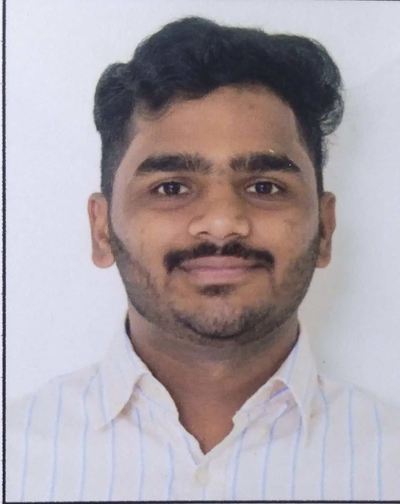

Web Developer
Email: ajinkya.r.khoje | Phone: +91 8806290063 | Location: PUNE
Web Developer proficient in JavaScript, Node.js and React, with a keen focus on frontend development. Demonstrates a strong capacity to build and optimize user-focused websites and applications, ensuring enhanced user experience. Committed to leveraging technical skills to produce high-quality, maintainable code for various web functionalities.
Augest 2022 – May 2023
Bachelor of Engineering (ENTC)
Savitribai Phule Pune University | Graduated: 2023 | CGPA: 7.67
SSC Maharashtra State board | 2016 | 92%
HSC Maharashtra State board | 2018 | 75.54%
Languages: HTML5, CSS3, JavaScript
Frameworks: React
Problem Solving
Good Communication
Playing Professional Cricket
Leadership